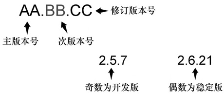
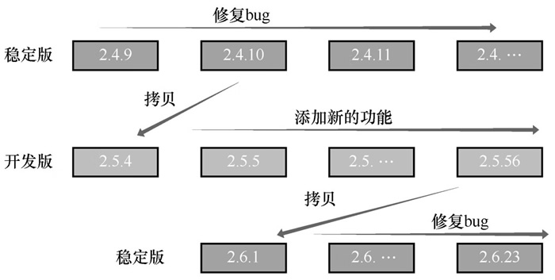

首页 > 编程笔记
Linux内核版本号的格式和说明
浏览 Linux 内核官网容易发现，Linux 内核版本号是由三组数字组成的，其格式为 AA.BB.CC，如图1所示。
Linux 内核的版本类型分成两种：一种是稳定版，另一种是开发版。
对图1中版本号格式的几点说明：
这种通过奇数和偶数来表示开发版和稳定版的方案在 Linux 2.6 版本之后就被放弃了，现在开发版的内核用
Linux 稳定版和开发版之间的升级路径如下：以一个稳定版的内核为基础，往这个内核中添加新的功能，在添加这些新功能的过程中会产生很多大大小小的 Bug，通过不断测试，将严重的、致命的 Bug修复了，这样一个开发版就完成了。
将完成的开发版通过不断测试，不断地修复漏洞，使内核的运行越来越稳定，这样就逐步升级为一个稳定版。
稳定版本的升级迭代就是为了修复一些小 Bug。那么开发版的升级又是怎么完成的呢？
Linux 内核版本的升级路径如图2所示。

图1：Linux 内核版本号的格式
图1：Linux 内核版本号的格式
Linux 内核的版本类型分成两种：一种是稳定版，另一种是开发版。
1) 稳定版
系统本身已经十分稳定，可以广泛地在企业中使用，较旧的稳定版过渡到新稳定版只需要修正一些小 Bug（漏洞）即可。2) 开发版
这一类型的版本会向内核中加入了一些新功能，本身不很稳定，可能存在严重 Bug，需要进行大量测试。对图1中版本号格式的几点说明：
- 主版本号的改变标志着 Linux 内核有重要的功能变动；
- 次版本号主要用来区别内核是开发版还是稳定版，开发版用奇数表示，稳定版用偶数表示；
- 修订版本号的改变表示较小的功能变动或者漏洞的修补次数。
这种通过奇数和偶数来表示开发版和稳定版的方案在 Linux 2.6 版本之后就被放弃了，现在开发版的内核用
-rc表示。Linux 稳定版和开发版之间的升级路径如下：以一个稳定版的内核为基础，往这个内核中添加新的功能，在添加这些新功能的过程中会产生很多大大小小的 Bug，通过不断测试，将严重的、致命的 Bug修复了，这样一个开发版就完成了。
将完成的开发版通过不断测试，不断地修复漏洞，使内核的运行越来越稳定，这样就逐步升级为一个稳定版。
稳定版本的升级迭代就是为了修复一些小 Bug。那么开发版的升级又是怎么完成的呢？
- 开发版最初是稳定版的拷贝，随后不断添加新功能、修正错误；
- 开发版趋于稳定后将升级为稳定版。
Linux 内核版本的升级路径如图2所示。

图2：Linux 内核版本的升级路径
图2：Linux 内核版本的升级路径
注意：图1和2仅用于演示，并不直接对应实际的内核版本号。
关注公众号「站长严长生」，在手机上阅读所有教程，随时随地都能学习。内含一款搜索神器，免费下载全网书籍和视频。

微信扫码关注公众号